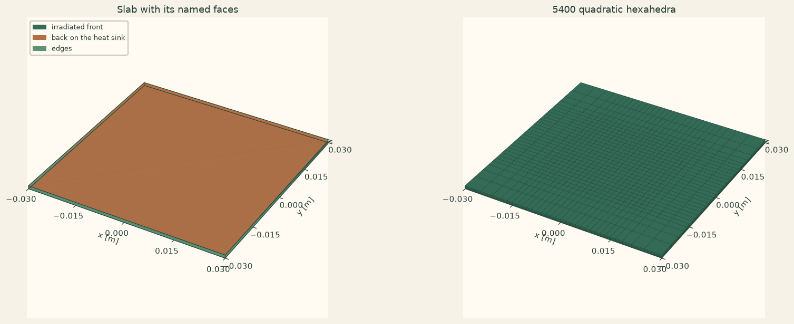

Docs › Examples › Laser heating of an absorbing slab (Beer-Lambert law)
Heat transfer · 3D
Laser heating of an absorbing slab (Beer-Lambert law)
A Gaussian laser beam is absorbed gradually in a thin glass slab on a heat sink; the absorbed light heats the glass from inside.
Run locally with OneSimulation. The example downloads are free. Running them requires an activated runtime. Runtime Alpha 0.2.1a7 · CPython 3.13 on macOS (Apple Silicon), Ubuntu 22.04 (x86-64), and Windows x64. Installation and activation · View pilot plans. Scope of the reference checks.

What it computes
OneSimulation reads the slab from a STEP file, meshes it with graded quadratic hexahedra and solves steady 3D conduction with the volumetric heat source of the Beer-Lambert law, alpha I(r, z), with the back on a heat sink. The script that builds the STEP file comes with the notebook.
What it checks
All absorbed power, 8.6466 W of the 10 W beam (P (1 - e^(-alpha d))), reaches the heat sink to four digits, and the front temperature on the beam axis, 45.05 °C, lies within 3 % of the temperature rise of the one-dimensional solution, whose sideways-conduction error is of order 2 %.
Geometry
The notebook starts at the import of the CAD file beer_lambert_slab_heating.step: STEP (AP242), readable by any CAD program, with the names of the faces that the boundary conditions use. Put it next to the notebook.

The geometry script
The script beer_lambert_slab_heating_geometry.py builds the geometry with the CAD objects of OneSimulation and writes the file. Change a dimension there, run it, and run the notebook again.
"""Geometry of the OneSimulation example "Laser heating of an absorbing slab (Beer-Lambert law)".
Builds the glass slab, 60 mm x 60 mm and 1 mm thick, with the CAD objects of OneSimulation and writes
beer_lambert_slab_heating.step. The irradiated face is named front, the face on the heat sink back and
the four edges form the group edges.
"""
from onesim.cad.d3 import Box
slab = Box(length=0.06, width=0.06, height=0.001, origin=(-0.03, -0.03, 0.0))
f = slab.boundaries
slab = slab.grouped(
front=f.z_min, back=f.z_max, edges=f.x_min | f.x_max | f.y_min | f.y_max
)
slab.save("beer_lambert_slab_heating.step")The notebook
The complete notebook, cell by cell. Run it to produce the figures and the comparison printout.
A laser beam (power \(P=10\) W, Gaussian radius \(w=10\) mm) falls on the front of a glass slab 1 mm thick. The glass absorbs the light gradually: the intensity decays along the beam as
with the absorption coefficient \(\alpha=2000\) 1/m (\(\alpha d=2\), so 86 % of the light is absorbed). The absorbed light is a heat source \(\dot q=-\partial I/\partial z=\alpha I\) in the steady heat equation
| face | condition | |---|---| | front, \(z=0\) | insulated (the light passes it; convection to air neglected) | | back, \(z=1\) mm | on a heat sink at 20 °C | | edges | insulated |
The slab (60 mm × 60 mm) comes from the CAD file beer_lambert_slab_heating.step; the script beer_lambert_slab_heating_geometry.py builds it with the CAD objects of OneSimulation.
Reference. All absorbed power must reach the heat sink: \(P_{abs}=P\,(1-e^{-\alpha d})\) (the beam is much narrower than the slab). On the beam axis the beam is 20 times wider than the slab is thick, so the heat flows almost straight to the back, and the one-dimensional solution of \(-kT''=\alpha I_0e^{-\alpha z}\) with \(T'(0)=0\), \(T(d)=T_s\),
holds up to the small sideways conduction, of relative order \(2d^2/w^2=2\,\%\).
import numpy as np
from onesim.cad.d2 import Plane
from onesim.cad.exchange import load
from onesim.materials import IsotropicSolid
from onesim.meshing import Geometric, Piecewise, StructuredHexahedralMesher
from onesim.numerics import Numerics
from onesim.numerics.fem import FiniteElement, Lagrange
from onesim.numerics.linear import SparseDirect
from onesim.physics.heat_transfer import FixedTemperature, HeatConduction, HeatFlux
from onesim.simulation import Problem, Simulation
from onesim.visualization import plots, theme
theme.set()Geometry and mesh
load returns the slab with its named faces. The hexahedra are 1.5 mm wide under the beam and grow towards the edges; six layers through the thickness, finer at the front, resolve the exponential absorption.
slab = load("beer_lambert_slab_heating.step")
faces = slab.boundaries
(x0, _, _), (x1, _, thickness) = slab.bounding_box
across = Piecewise(
(
(-0.015 - x0, Geometric(5, first=0.0015, toward="end")),
(0.03, Geometric(20, ratio=1.0)),
(x1 - 0.015, Geometric(5, first=0.0015)),
)
)
grading = (across, across, Piecewise(((thickness, Geometric(6, ratio=3.0)),)))
mesh = StructuredHexahedralMesher(
cells=tuple(g.cells for g in grading), grading=grading
).generate(slab)
view = plots.Camera(elevation=35, azimuth=-60)
fig = plots.figure(1, 2, size=(15, 5.5))
plots.geometry(
slab,
selection={
"irradiated front": faces.front,
"back on the heat sink": faces.back,
"edges": faces.edges,
},
labels=False,
camera=view,
title="Slab with its named faces",
ax=fig[0],
)
plots.mesh(
mesh,
groups=("all",),
legend=False,
camera=view,
title=f"{mesh.cell_count} quadratic hexahedra",
ax=fig[1],
)
plots.show()Model
The Beer-Lambert source is the heating density of the model, a function of position.
power, beam, absorption, sink = 10.0, 0.010, 2000.0, 293.15
peak = 2 * power / (np.pi * beam**2)
glass = IsotropicSolid(
density=2500.0,
specific_heat_capacity=800.0,
thermal_conductivity=1.4,
youngs_modulus=7e10,
poisson_ratio=0.22,
thermal_expansion_coefficient=9e-6,
)
model = HeatConduction(
domain=slab.volume,
material=glass,
heating=lambda x, y, z: absorption
* peak
* np.exp(-2 * (x**2 + y**2) / beam**2 - absorption * z),
)
problem = Problem(
name="Beer-Lambert heating",
geometry=slab,
physics=(model,),
boundary_conditions=(
FixedTemperature(boundary=faces.back, physics=model, value=sink),
HeatFlux(boundary=faces.front | faces.edges, physics=model, value=0.0),
),
)
temperature = (
Simulation(
problem=problem,
mesh=mesh,
numerics=Numerics(
spatial=FiniteElement(element=Lagrange(order=2)),
linear_solver=SparseDirect(),
),
)
.solve_stationary()
.field(model.temperature)
)Results
absorbed = power * (1 - np.exp(-absorption * thickness))
k = glass.thermal_conductivity
axis_exact = lambda z: sink + peak / k * (
(thickness - z)
- (np.exp(-absorption * z) - np.exp(-absorption * thickness)) / absorption
)
z = np.linspace(0, thickness, 101)
axis = temperature.evaluate(
np.column_stack((np.zeros_like(z), np.zeros_like(z), z))
).ravel()
print(
f"absorbed power: Beer-Lambert {absorbed:.4f} W, heat into the sink {temperature.boundary_flux(faces.back):.4f} W"
)
print(
f"front temperature on the axis: simulation {axis[0] - 273.15:.3f} °C, one-dimensional solution {axis_exact(0.0) - 273.15:.3f} °C "
f"({100 * (axis[0] - axis_exact(0.0)) / (axis_exact(0.0) - sink):+.2f} % of the rise)"
)Figure
The temperature of the front face, a section through the beam axis (thickness drawn ten times enlarged), and the temperature through the slab on the axis.
celsius = lambda T, position: T - 273.15
r = np.linspace(-0.03, 0.03, 301)
fig = plots.figure(layout=[["front", "axis"], ["section", "section"]], size=(16, 10))
plots.surface(
temperature,
boundary=faces.front,
component=celsius,
limits=(20, 50),
contours=7,
subdivisions=2,
xlabel="x [m]",
ylabel="y [m]",
label="T [°C]",
title="Front face under the beam",
ax=fig["front"],
)
plots.line(
points={"simulation": (1e3 * z[::5], axis[::5] - 273.15)},
reference={"one-dimensional solution": (1e3 * z, axis_exact(z) - 273.15)},
xlabel="depth z [mm]",
ylabel="T on the beam axis [°C]",
title="Through the slab on the axis",
legend="upper right",
ax=fig["axis"],
)
plots.section(
temperature,
plane=Plane(origin=(0, 0, 0), normal=(0, 1, 0)),
component=celsius,
limits=(20, 50),
contours=16,
subdivisions=2,
aspect=10.0,
xlimits=(-0.025, 0.025),
label="T [°C]",
title="Section through the beam axis (thickness drawn ten times enlarged)",
ax=fig["section"],
)
plots.show()Going further
Raise the absorption coefficient: the heat is released ever closer to the front and the slab behaves like a surface-heated plate. Or let the front lose heat by convection to air (ConvectiveHeatFlux) and narrow the beam, so that sideways conduction takes over.